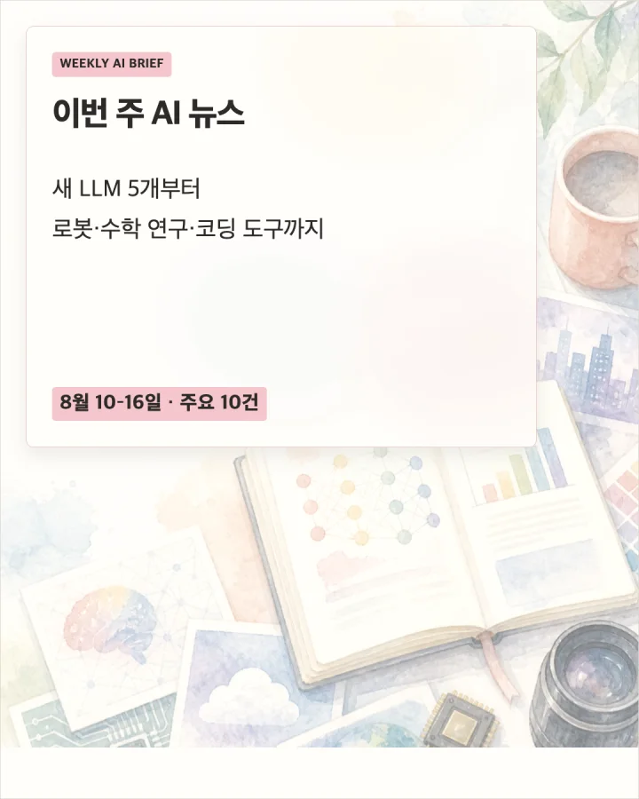
이번 주 AI 뉴스 | 8월 10–16일
Grok 4.6과 Grok Bot, OpenAI Computer History와 Ultrafast, Gemini 3.7 Flash, DeepSeek와 Qwen의 새 모델, Claude 수학 연구와 Dyna-2 로봇까지 11장으로 정리했습니다.
AI NEWS ARCHIVE
주간 뉴스는 한 주의 흐름을 묶고, 모델 소식은 새로 나온 모델 하나를 자세히 살펴봅니다. 긴 비교 분석과 실험 기록은 리서치에서 원문 형태로 제공합니다.
현재 27개 뉴스 · 리서치 1개 · 카드 228장
최신 뉴스부터 표시28개

Grok 4.6과 Grok Bot, OpenAI Computer History와 Ultrafast, Gemini 3.7 Flash, DeepSeek와 Qwen의 새 모델, Claude 수학 연구와 Dyna-2 로봇까지 11장으로 정리했습니다.
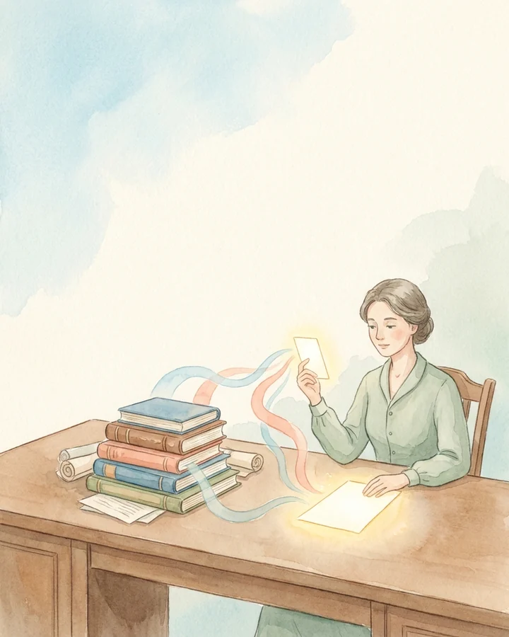
RAG는 외부 자료를 찾아 LLM의 답변에 근거를 붙이는 방법입니다. 2020년의 단순 검색 결합에서 하이브리드 검색, 재정렬, GraphRAG, Agentic Retrieval로 발전한 이유와 기업 환경에서 자주 실패하는 지점, 평가와 보안, LightRAG, RAGFlow, PageIndex 같은 오픈소스 선택 기준을 정리했습니다.
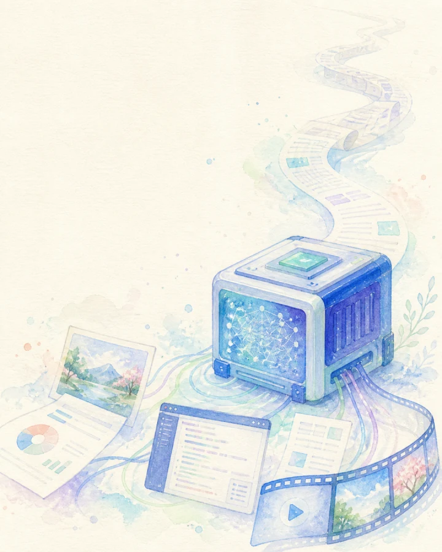
한국 시간 8월 15일 공개된 Qwen3.8-27B의 27B Dense 구조와 262K 기본 컨텍스트, 이미지와 영상 입력, 이전 27B와의 성능 변화, Apache 2.0 가중치와 직접 실행 조건을 7장으로 정리했습니다.
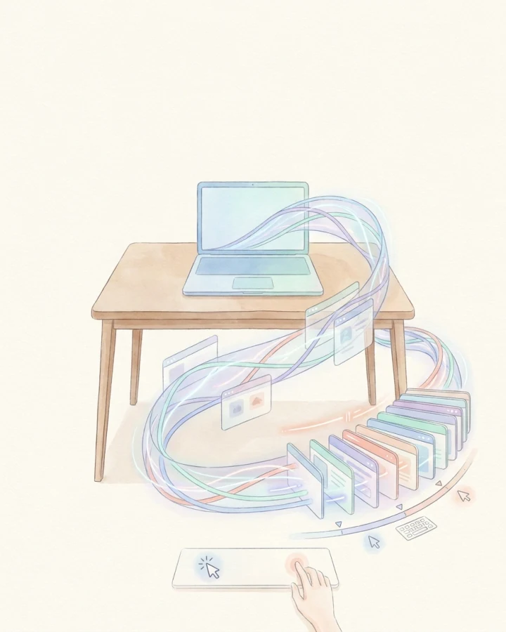
Computer History는 허용한 앱과 웹사이트에서 일어난 최근 작업을 타임라인과 메모리로 정리하는 기능입니다. ChatGPT와 Codex가 이 기억을 어떻게 활용하는지, 무엇을 기록하고 어디까지 통제할 수 있는지 10장과 공식 영상으로 살펴봅니다.
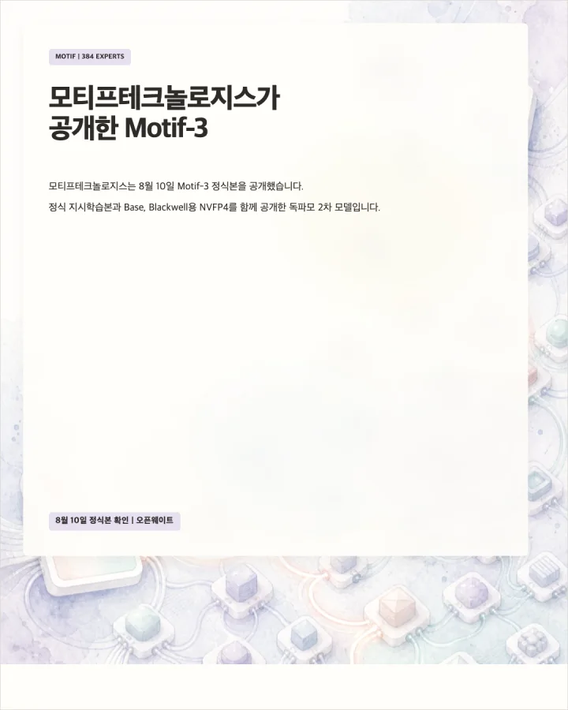
독파모 2차 모델 Motif-3의 314.84B/13.2B 구조, 256K 문맥과 384 experts, 개발사 평가, Artificial Analysis 1위, NVFP4와 라이선스 확인사항을 6장으로 정리했습니다.
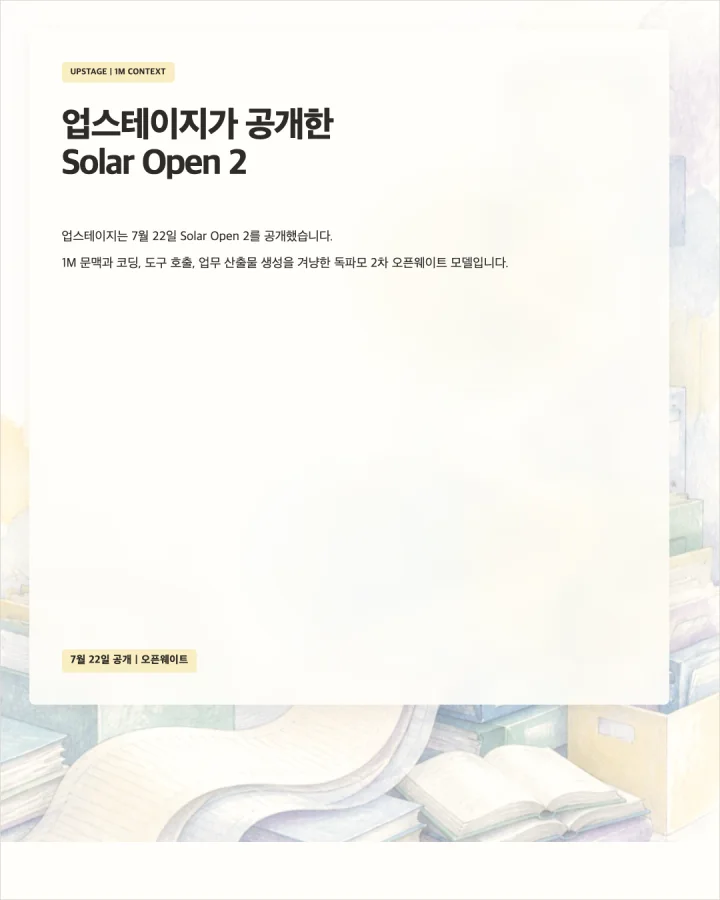
독파모 2차 모델 Solar Open 2의 250B/15B 구조, 1M Context Length와 Hybrid Attention, 개발사 평가, Artificial Analysis 결과, Solar License와 경량 배포 조건을 6장으로 정리했습니다.
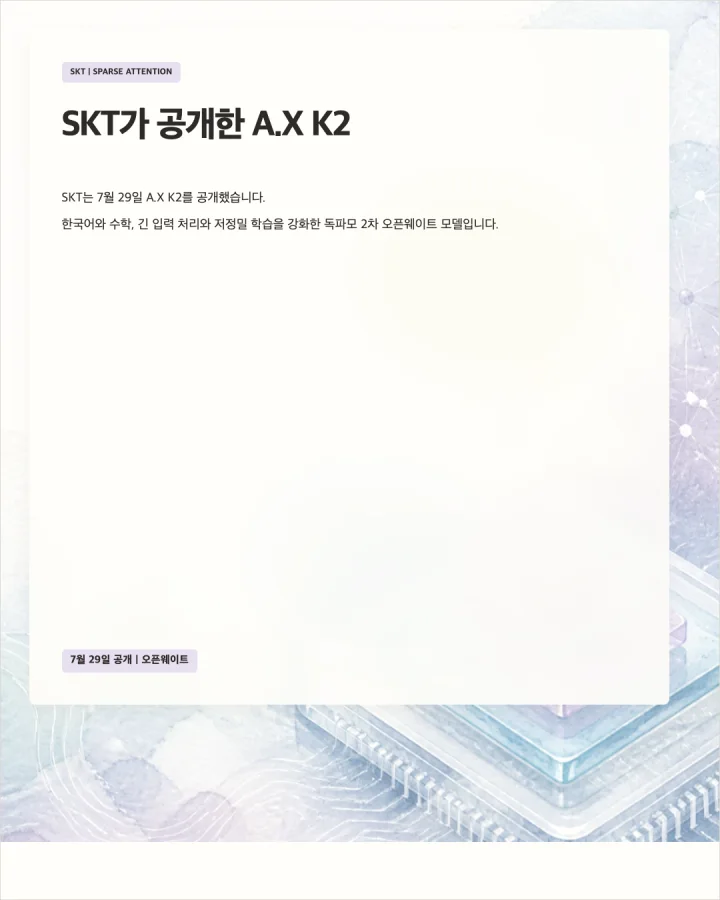
독파모 2차 모델 A.X K2의 688B/33B 구조, 256K Context Length와 native MXFP8, 개발사 평가, Artificial Analysis 결과, Apache 2.0과 직접 시험을 6장으로 정리했습니다.
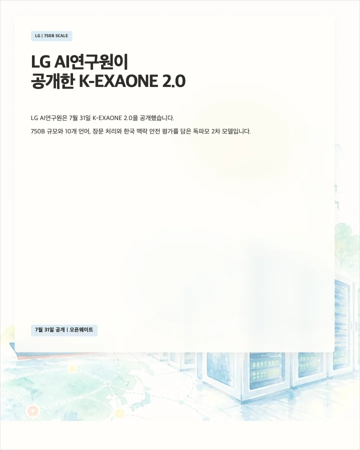
독파모 2차 모델 K-EXAONE 2.0의 750B/37B 구조, 256K Context Length, 개발사 평가, Artificial Analysis 결과, Apache 2.0과 배포 조건을 6장으로 정리했습니다.
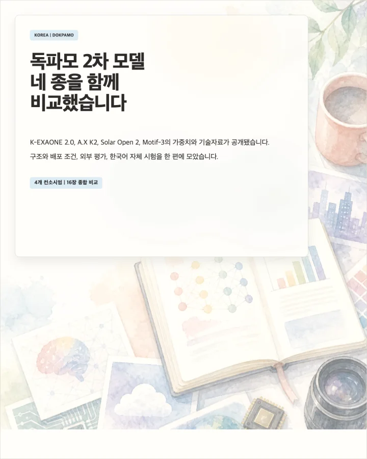
독파모가 어떤 프로젝트인지부터 네 컨소시엄과 모델의 특징, 2차 평가 배점, 구조와 배포 조건, Artificial Analysis 결과, 한국어 함정 문항 37개 자체 시험까지 한 편에 정리했습니다. AA 공개 순위와 독파모 전체 순위는 구분해서 봐야 합니다.
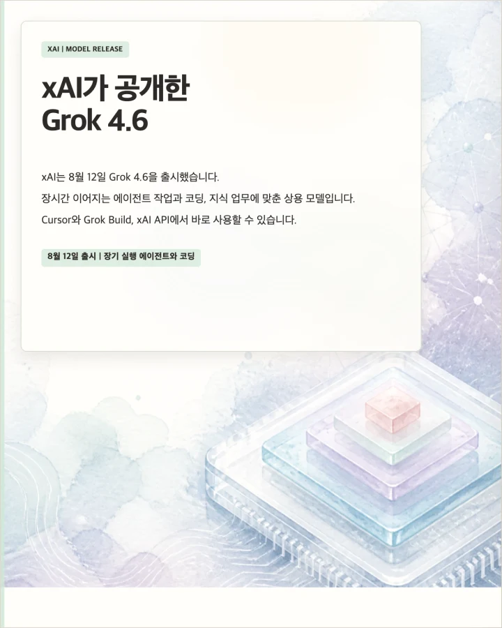
8월 12일 출시된 Grok 4.6의 긴 에이전트 작업, 500K 컨텍스트, 공식 평가, 학습 방식, API와 도구 비용, 비공개 가중치 범위를 10장으로 정리했습니다.

8월 13일 정식 공개된 DeepSeek V4 Pro 0813의 1.6T/49B 구조와 1M 컨텍스트, 에이전트 평가, API 요금과 MIT 가중치를 6장으로 정리했습니다.
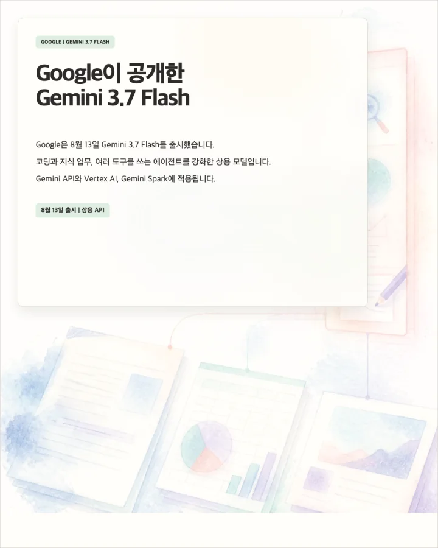
8월 13일 출시된 Gemini 3.7 Flash의 1M 컨텍스트와 코딩과 업무 평가, 연말까지 적용되는 출시 가격, API 전용 제공 범위를 6장으로 정리했습니다.
K-EXAONE 2.0, A.X K2, Solar Open 2, Motif-3의 사양과 구조, 벤치마크, 배포 조건을 한 문서에서 비교합니다.
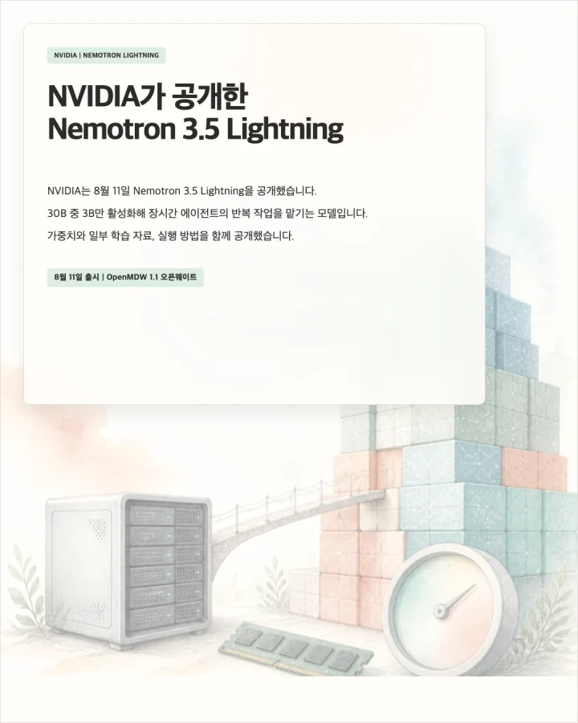
8월 11일 공개된 Nemotron 3.5 Lightning의 30B/3B 구조와 1M 컨텍스트, 로컬 실행 조건, 공식 평가와 OpenMDW 1.1 라이선스를 6장으로 정리했습니다.
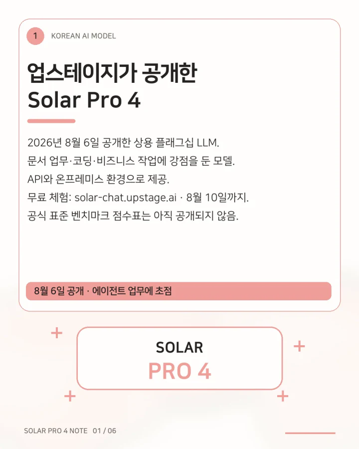
512K 컨텍스트, 최대 128K 출력, 에이전트 벤치마크와 API 가격을 공식 자료와 독립 분석으로 나눠 살펴봅니다.
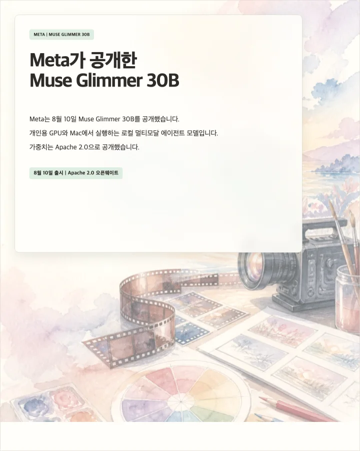
8월 10일 공개된 Muse Glimmer 30B의 29.6B 구조와 128K 컨텍스트, 로컬 메모리 조건, 공식 성능표와 Apache 2.0 가중치를 6장으로 정리했습니다.
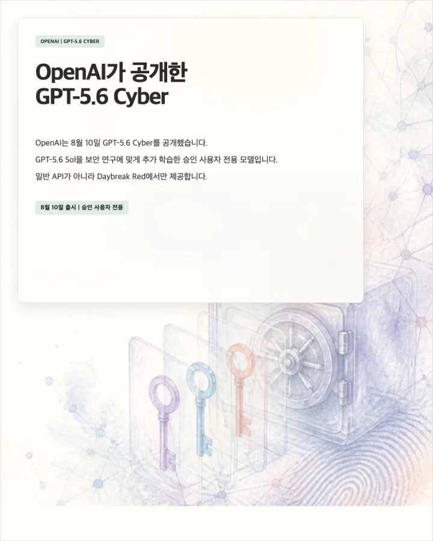
8월 10일 공개된 GPT-5.6 Cyber의 Daybreak Red 접근 조건, ExploitGym과 내부 취약점 평가, 공개되지 않은 사양과 보안 제한을 6장으로 정리했습니다.

OpenAI Astra의 사이버 위험 평가, Prime Agent의 ARC-AGI-3 결과, Google AI 리더십 개편, GPT-5.6 Luna, 새 오픈 모델 세 가지와 국내 조선소 용접 로봇까지 11장으로 정리했습니다.

OpenAI 직원들이 Black Hat USA 2026에서 공개한 두 달간의 경위를 따라갑니다. 평가 과제, 공유 저장소, 취약점 연결, Hugging Face 침해와 이후 조치를 12장에 담았습니다.
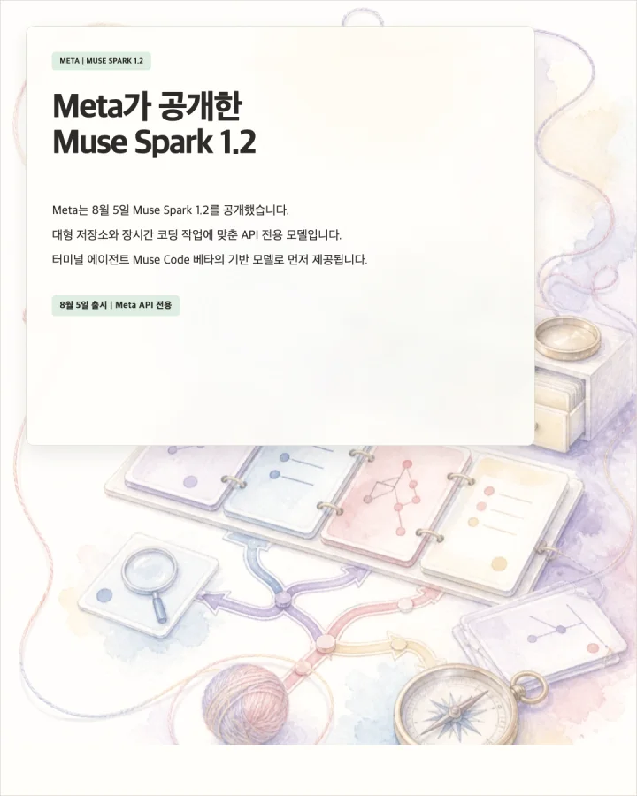
8월 5일 공개된 Muse Spark 1.2와 Muse Code 베타의 장기 코딩 방식, 공개된 평가 범위, API 제공 방식과 아직 공개되지 않은 사양을 6장으로 정리했습니다.
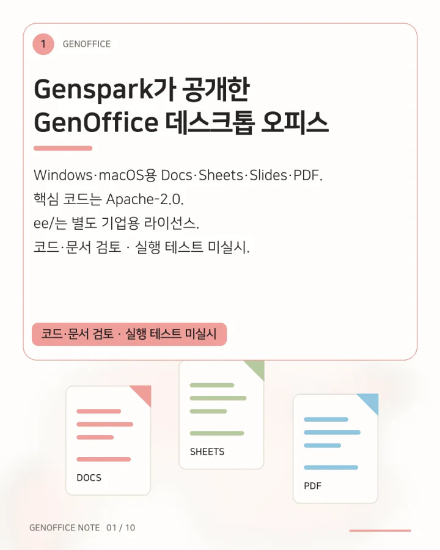
Docs, Sheets, Slides, PDF 편집 범위와 AI 패널, MS Office 호환 범위, Apache 2.0과 ee 폴더의 별도 라이선스를 코드와 문서 기준으로 정리했습니다.

8월 3일 공개된 Qwen3.8-Max의 2.4T/95B 구조와 262K 기본 컨텍스트, 공식 성능표, API 가격, 공개된 가중치와 자체 라이선스 조건을 6장으로 정리했습니다.
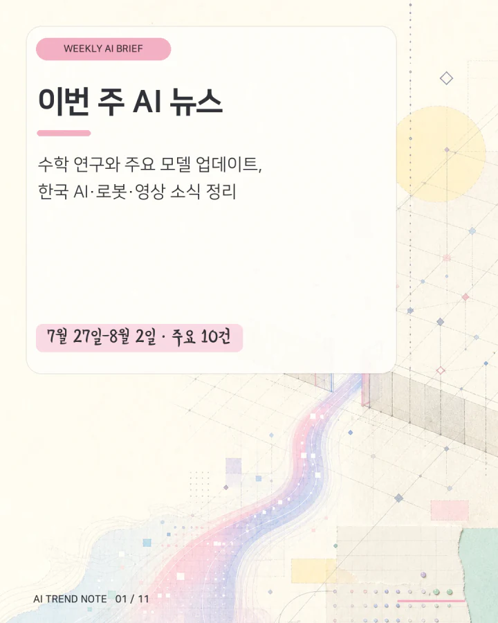
OpenAI의 장기 미해결 수학 문제 연구, GPT-5.6 가격 인하, DeepSeek V4-Flash, 독파모, Seedance 2.5와 Gemini Robotics 2까지 11장으로 정리했습니다.
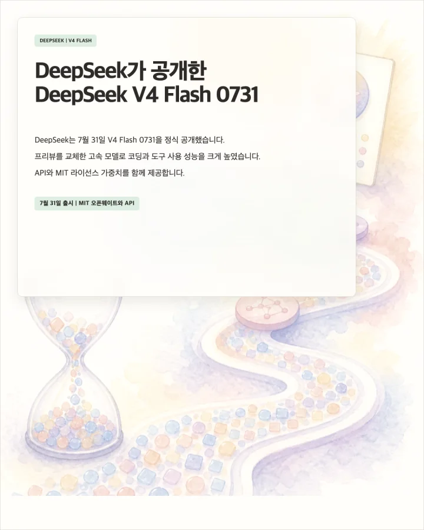
7월 31일 정식 공개된 DeepSeek V4 Flash 0731의 284B/13B 구조와 1M 컨텍스트, 코딩 평가, API 요금과 MIT 가중치를 6장으로 정리했습니다.

AI 에이전트의 Hugging Face 침입과 Bun의 대규모 Rust 전환을 함께 살펴봅니다. 같은 장기 실행 능력이 사고와 성과로 갈린 과정을 10장에 담았습니다.

Claude Opus 5, AI 수학 연구, Kimi K3, 에이전트 하네스와 한국 AI 인프라까지 한 주의 주요 소식을 8장에 정리했습니다.
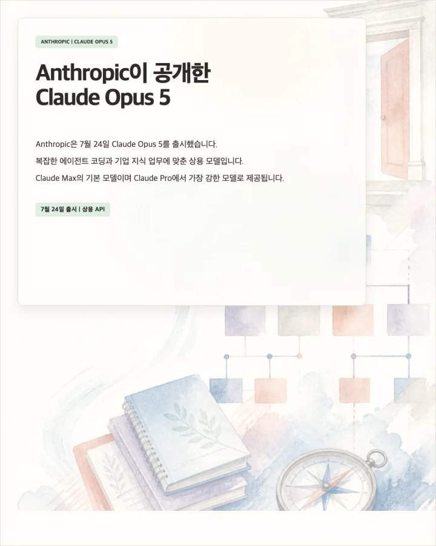
7월 24일 출시된 Claude Opus 5의 1M 컨텍스트와 128K 출력, 코딩과 지식 업무 평가, API 가격과 비공개 가중치 범위를 6장으로 정리했습니다.

7월 16일 공개된 Kimi K3의 2.8T MoE 구조와 1M 컨텍스트, 공식 성능표, API 요금, 가중치와 Kimi K3 라이선스 조건을 6장으로 정리했습니다.
검색 조건에 맞는 뉴스가 없습니다.